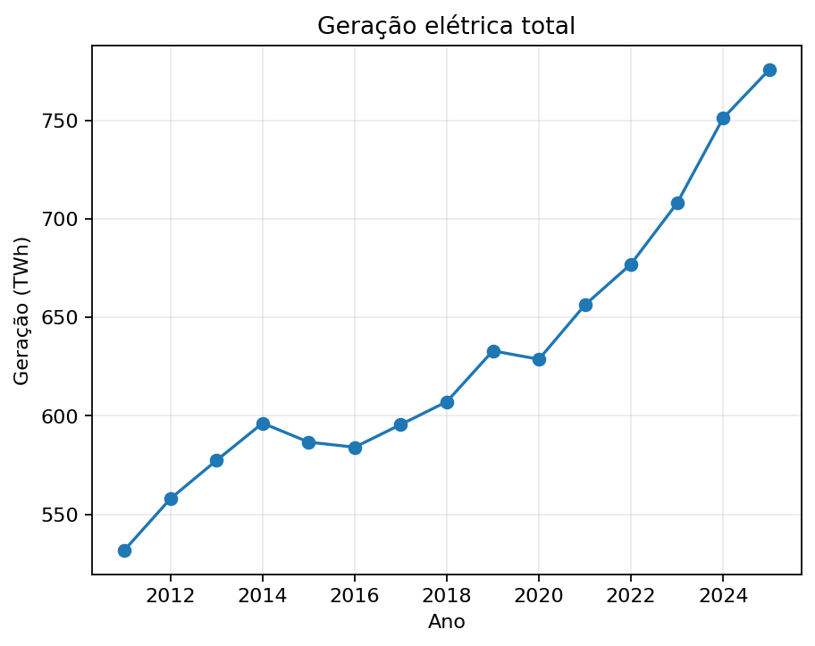
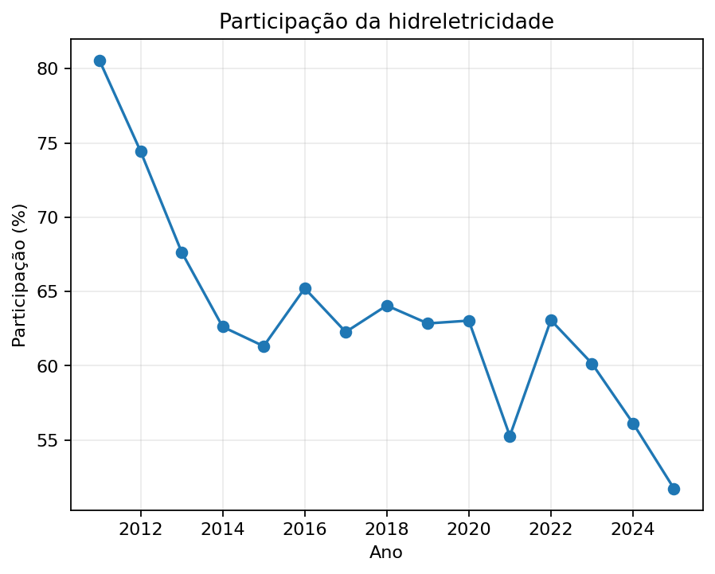
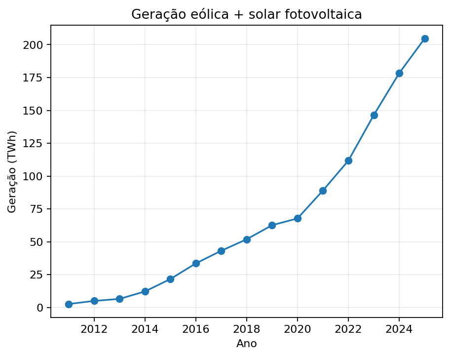
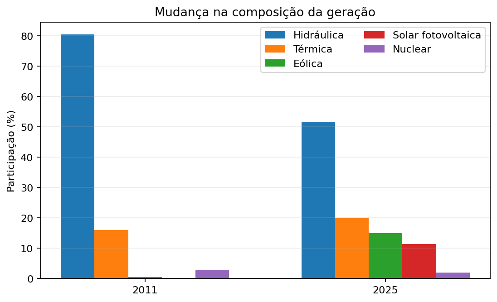

Abdiel Souza · 2026
Este estudo analisa a transformação da matriz elétrica brasileira entre 2011 e 2025 a partir de séries históricas da Empresa de Pesquisa Energética (EPE). A geração total passou de 531,76 TWh em 2011 para 775,90 TWh em 2025, aumento de 45,9%. A geração hidráulica recuou de 428,33 TWh para 401,42 TWh, enquanto sua participação caiu de aproximadamente 80,5% para 51,7%. Em sentido oposto, a geração eólica alcançou 116,49 TWh e a solar fotovoltaica 88,14 TWh. Juntas, representaram 26,4% da geração em 2025. Os resultados indicam redução da concentração hidráulica e diversificação tecnológica.
Palavras-chave: matriz elétrica; geração; hidreletricidade; eólica; solar; Brasil.
A matriz elétrica brasileira possui elevada participação histórica de fontes renováveis, especialmente hidrelétrica. A questão central deste estudo é como sua composição mudou entre 2011 e 2025. A hipótese é que a principal mudança foi a redução da concentração relativa na hidreletricidade acompanhada pela expansão de eólica e solar. No BEN 2026, a EPE registra 86,8% de renovabilidade e 26,4% para eólica e solar.
Foram utilizadas as séries históricas do BEN/EPE, dados estaduais e capacidade instalada. A geração total anual foi tomada da linha PRODUÇÃO da tabela de eletricidade do BEN. Hidráulica, eólica, solar e nuclear foram agregadas dos dados estaduais; a térmica foi calculada como residual para reconciliar a soma ao total oficial. As participações foram calculadas dividindo-se a geração da fonte pela geração total anual. Taxas sobre bases próximas de zero não foram usadas como principal indicador para a solar.
A geração aumentou de 531,76 TWh para 775,90 TWh, acréscimo de 45,9%. O crescimento ocorreu simultaneamente à mudança da composição das fontes.

A geração hidráulica caiu cerca de 6,3%, mas sua participação caiu de aproximadamente 80,5% para 51,7%. A fonte permaneceu como principal componente individual.

A eólica passou de 2,70 para 116,49 TWh; a solar, de praticamente zero para 88,14 TWh. Juntas alcançaram 204,63 TWh, ou 26,4% da geração em 2025.

A principal transformação foi a diversificação interna de uma matriz que continuou predominantemente renovável.

A térmica permaneceu relevante como categoria agregada de combustíveis e tecnologias. A nuclear permaneceu relativamente estável em torno de 15–16 TWh anuais.
Os resultados indicam três características: continuidade da elevada renovabilidade, perda de concentração relativa da hidreletricidade e consolidação de eólica e solar. A formulação mais precisa é: o Brasil não deixou de depender da hidreletricidade; passou a depender menos exclusivamente dela.
Entre 2011 e 2025, a matriz elétrica brasileira tornou-se significativamente mais diversificada. A geração total cresceu 45,9%, a participação hidráulica caiu para 51,7% e eólica e solar chegaram a 26,4%. A transformação ocorreu dentro de uma matriz ainda predominantemente renovável.
O estudo é descritivo e não estima causalidade. Não são modelados despacho, transmissão, armazenamento, preços, confiabilidade ou capacidade de reserva. Geração e capacidade instalada também não são variáveis diretamente intercambiáveis.
EMPRESA DE PESQUISA ENERGÉTICA — EPE. Balanço Energético Nacional 2026: Relatório Síntese — ano base 2025. Rio de Janeiro: EPE, 2026.
EMPRESA DE PESQUISA ENERGÉTICA — EPE. BEN — Séries Históricas e Matrizes. Rio de Janeiro: EPE.
EMPRESA DE PESQUISA ENERGÉTICA — EPE. Anuário Estatístico de Energia Elétrica 2026 — ano base 2025. Rio de Janeiro: EPE, 2026.